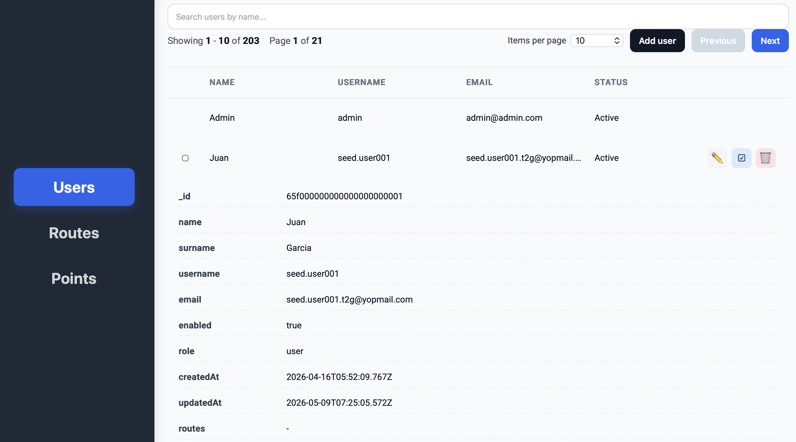
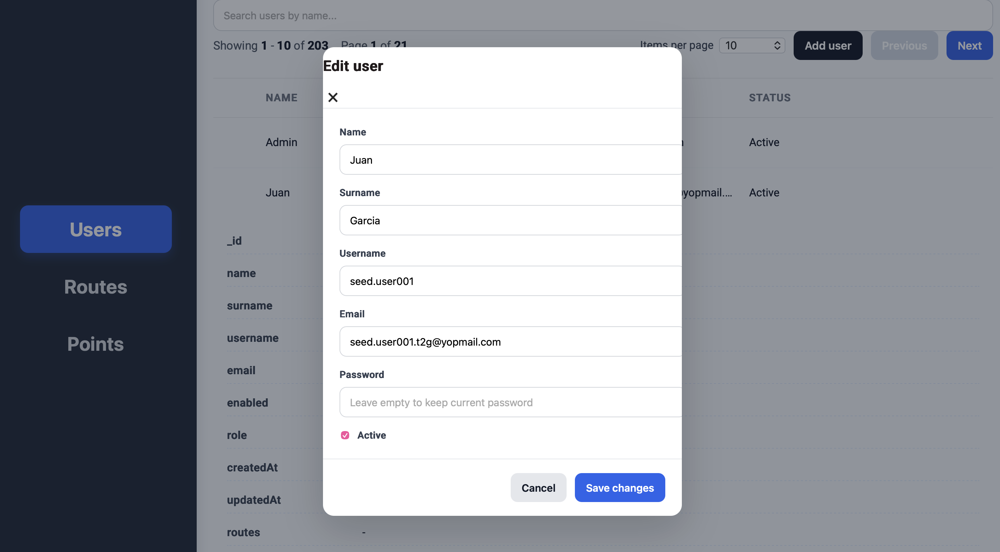
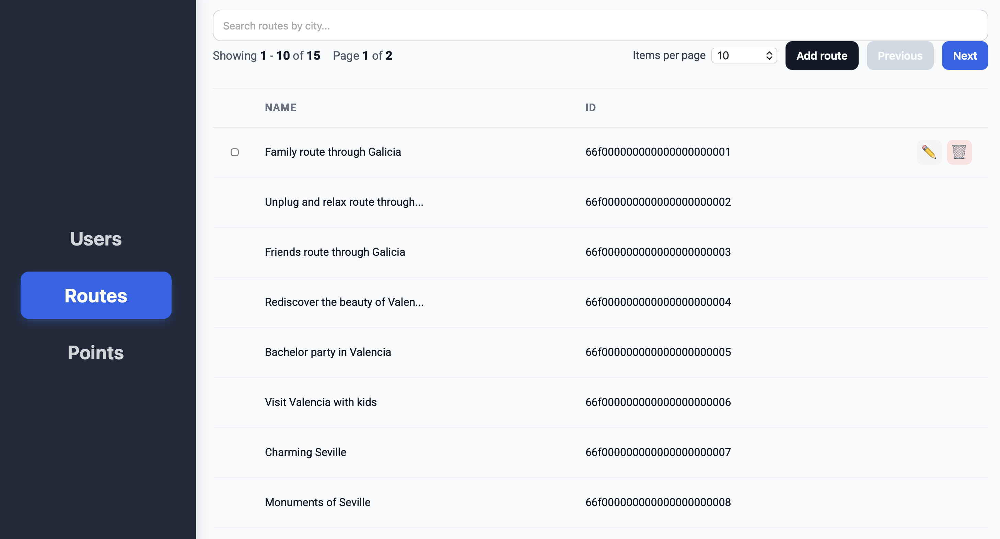
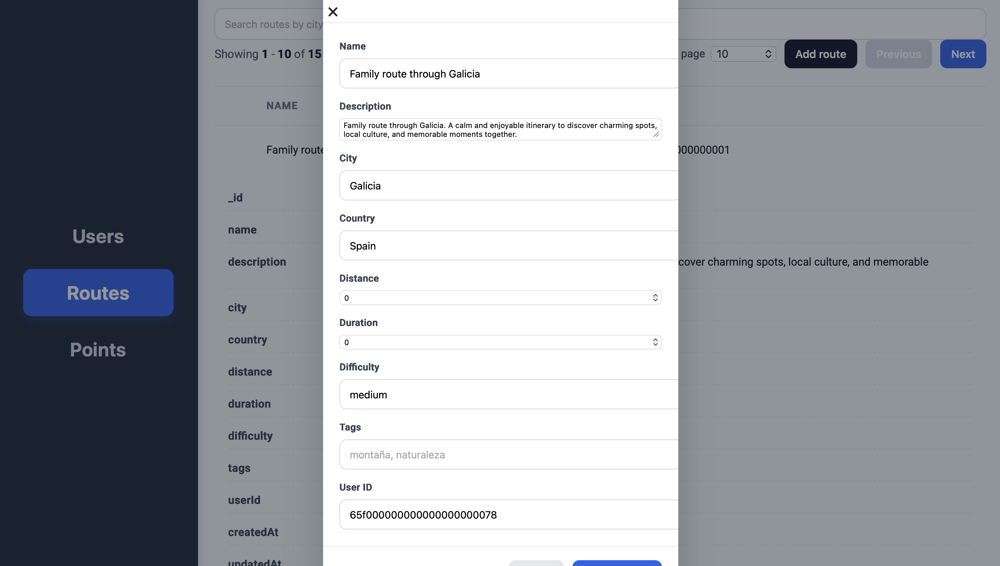
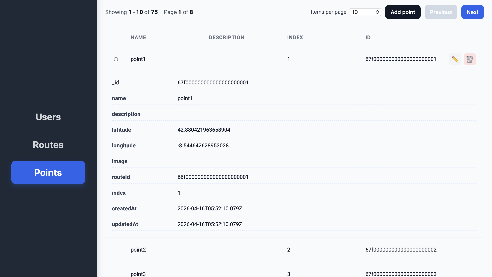

Sprint 1: Desenvolupament del Backoffice
Període del Sprint: Del 24 de febrer al 20 de març de 2026.
Després d'haver treballat en el desenvolupament de la API REST i la validació de dades al Backend (Sprint 0),
ens hem centrat en la implementació de la primera versió del nostre Backoffice amb Angular,
on podrem gestionar i administrar els elements principals del nostre projecte.
Història d'usuari (Backoffice)
"Com a administrador del sistema, vull poder accedir a un backoffice web dissenyat en
Angular connectat a la nostra API REST, per tal de poder visualitzar, afegir, editar i
esborrar els usuaris, les rutes i els punts d'interès, podent fer ús de llistats paginats i
cercadors per fer una gestió eficient."
Entitats i Funcionalitats Desenvolupades
Dins del projecte de backoffice hem integrat un mínim de tres entitats principals connectades amb MongoDB:
- Usuaris (Users): Gestió de tots els perfils registrats a l'aplicació.
- Rutes (Routes): Administració de les rutes (free tours, viatges...).
- Punts (Points): Punts d'interès de cadascuna de les rutes.
Per a cada una d'aquestes entitats hem desenvolupat el cicle complet d'operacions (CRUD):
- Llistat d'elements paginat: Aprofitem els recursos de
limitiskipde la base de dades MongoDB per a un rendiment òptim en frontend. - Cercador d'elements: Hem afegit un cercador (per exemple, cerca per nom d'usuari o cerca de rutes per ciutat).
- Formularis de creació i modificació: Interfícies amigables per a afegir i editar informació amb validacions integrades (tant al client a través d'Angular com al servidor).
- Esborrat de dades:
- Esborrat tou (soft delete): Els elements es marquen com a inactius sense desaparèixer permanentment.
- Esborrat dur (hard delete): L'esborrat físic complet.





Metodologia i Organització d'Equip
Hem continuat aplicant la nostra metodologia àgil, basant-nos en el framework Scrum. Al
nostre projecte de GitHub hem distribuït clarament les històries i tasques.
Durant aquest període, cadascú ha assumit els seus rols pertinents (Scrum Master, Product Owner i Equip de
desenvolupament) i hem fet un control del registre de temps. Hem recollit tota aquesta informació a l'Excel de
seguiment desglossant les hores dedicades en frontend, backoffice, backend, devops i gestió, com demanava la
rubrica de l'assignatura. I, per suposat, tot el codi està traçat sota el nostre flux de treball actiu de Git.